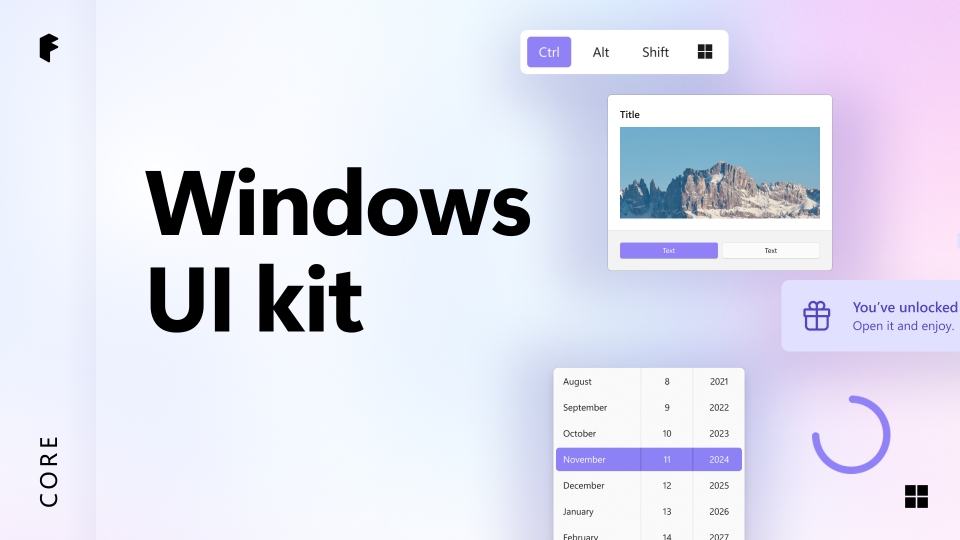
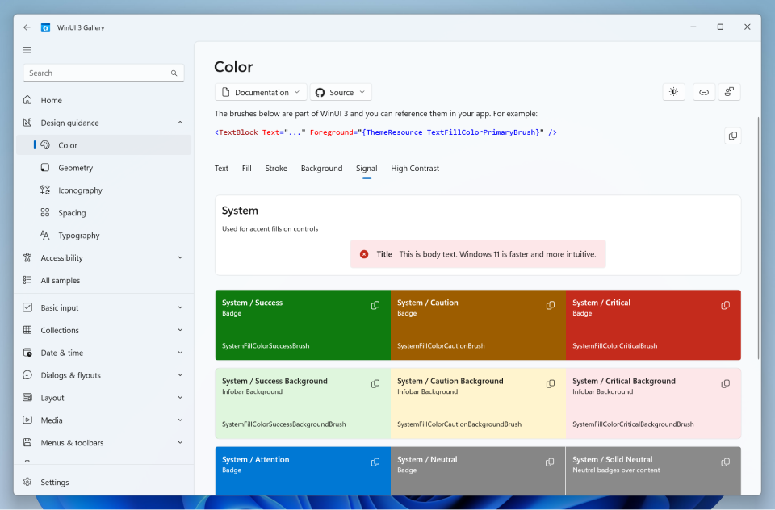

Design resources for Windows apps
This topic provides a variety of design and UI-related resources for creating visually appealing and user-friendly Windows applications.
Fonts
The Windows type system helps you create structure and hierarchy in your content in order to maximize legibility and readability in your UI (for more details, see Segoe UI font family).
The following fonts are recommended:
- Segoe UI Variable (see Typography in Windows)
- Segoe Fluent Icons (see Segoe Fluent Icons font)
- Segoe MDL2 (see Segoe MDL2 Assets icons)
Windows UI Kit

The Windows Design Kit for Figma provides a comprehensive toolkit to help developers and designers create visually consistent and engaging Windows apps
The Windows Design Kit is a Figma library that includes:
UI components: Prebuilt elements like buttons, toggles, sliders, and more.
Design patterns: Templates for navigation, dialogs, and layouts.
Styles and tokens: Predefined colors, typography, and spacing.
WinUI Gallery
The Design Guidance section of the WinUI Gallery offers best practices and tools to help you choose and apply the right colors, typography, and icons for your app. The Accessibility section includes code snippets and tips to make your app more inclusive and accessible to all users.

Samples
Check out the Samples and resources page for complete list of all our Windows app samples.